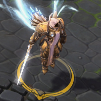
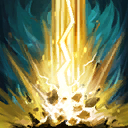
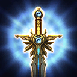
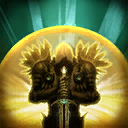
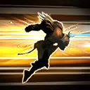
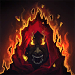
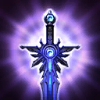
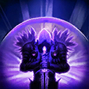
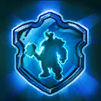

Tyrael
Welcome to our Tyrael guide for Heroes of the Storm. Here you will learn everything you need to know in order to play Tyrael in a competitive environment, whether you play on your own or with a team.
Aggressive Build
| Level 1 | Level 4 | Level 7 | Level 10 | Level 13 | Level 16 | Level 20 |
|---|---|---|---|---|---|---|
|  |  |  |  |  |  |
The Aggressive Build focuses more on Tyrael's offensive capabilities and is a recommended choice if your team already has a dedicated Tank. Picking Judgment Icon Judgment at Level 10 over Sanctification Icon Sanctification allows Tyrael to dive deep into the enemy team's backline, ideally picking and isolating a low health priority target.
Defensive Build
| Level 1 | Level 4 | Level 7 | Level 10 | Level 13 | Level 16 | Level 20 |
|---|---|---|---|---|---|---|
|  |  |
The Defensive Build aims to make Tyrael as resilient as possible in order to allow him to hold the frontline without dying too quickly. It is important to highlight that Tyrael does not have Stun or Root abilities, which means his zoning potential is limited compared to other Warriors. However, numerous defensive talents like Angelic Absorption Icon Angelic Absorption and Nullification Shield Icon Nullification Shield make him very hard to kill and thus cause Tyrael to become a thorn in the enemy team's side.
Go Back